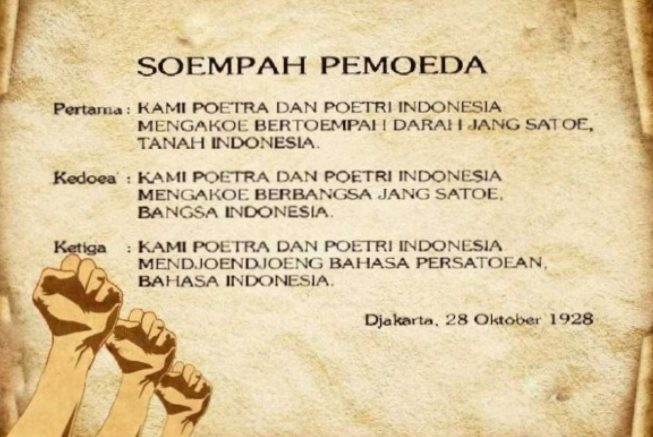

Sejarah Sumpah Pemuda
Lahirnya Sumpah Pemuda adalah dari hasil rapat para pemuda yakni pada Kongres Pemuda Kedua tanggal 28 Oktober 1928. Kala itu, para pemuda menyelenggarakan rapat atau kongres pemuda yang diusulkan oleh Perhimpunan Pelajar Pelajar Indonesia (PPPI) yakni organisasi pemuda yang beranggota pelajar dari seluruh Indonesia.
Adapun Kongres pemuda tersebut diselenggarakan selama tiga kali dan digelar pada tiga tempat yang berbeda hingga akhirnya melahirkan ikrar pemuda yang disebut Sumpah Pemuda. Ikrar Sumpah Pemuda dibacakan pada 28 Oktober 1928.
Kongres Pemuda dihadiri oleh kumpulan pemuda Indonesia dari Jong Java, Jong Sumatra (Pemuda Sumatra), Pemuda Indonesia Sekar Rukun, Jong Islamieten, Jong Bataksbond, Jong Celebes, Pemuda Kaum Betawi dan Perhimpunan Pelajar-Pelajar Indonesia.
RAPAT PERTAMA, GEDUNG KATHOLIEKE JONGENLINGEN BOND
Rapat pertama, Sabtu, 27 Oktober 1928 antara pukul 19.30-23.30, di Gedung Katholieke Jongenlingen Bond (KJB), Lapangan Banteng. Dalam sambutannya, Soegondo berharap kongres ini dapat memperkuat semangat persatuan dalam sanubari para pemuda. Acara dilanjutkan dengan uraian Moehammad Jamin tentang arti dan hubungan persatuan dengan pemuda. Menurutnya, ada lima faktor yang bisa memperkuat persatuan Indonesia yaitu sejarah, bahasa, hukum adat, pendidikan, dan kemauan.
RAPAT KEDUA, GEDUNG OOST-JAVA BIOSCOOP
Rapat kedua, Minggu, 28 Oktober 1928 dari pukul 08.00-12.00, di Gedung Oost-Java Bioscoop, membahas masalah pendidikan. Kedua pembicara, Poernomowoelan dan Sarmidi Mangoensarkoro, sependapat bahwa anak harus mendapat pendidikan kebangsaan, harus pula ada keseimbangan antara pendidikan di sekolah dan di rumah. Anak juga harus dididik secara demokratis.
RAPAT KETIGA, GEDUNG INDONESISCHE CLUBGEBOUW
Rapat ketiga, Masih di hari yang sama, tanggal 28 Oktober 1928, pukul 17.30-23.30 di Gedung Indonesische Clubgebouw Pada sesi berikutnya, Soenario menjelaskan pentingnya nasionalisme dan demokrasi selain gerakan kepanduan. Sedangkan Ramelan mengemukakan, gerakan kepanduan tidak bisa dipisahkan dari pergerakan nasional. Gerakan kepanduan sejak dini mendidik anak-anak disiplin dan mandiri, hal-hal yang dibutuhkan dalam perjuangan.
Sebelum kongres ditutup diperdengarkan lagu “Indonesia” karya Wage Rudolf Supratman. Lagu tersebut disambut dengan sangat meriah oleh peserta kongres. Kongres ditutup dengan mengumumkan rumusan hasil kongres. Oleh para pemuda yang hadir, rumusan itu diucapkan sebagai Sumpah Setia, berbunyi :
PERTAMA.
KAMI POETERA DAN POETERI INDONESIA,
MENGAKOE BERTOEMPAH DARAH JANG SATOE,
TANAH INDONESIA.
KEDOEA.
KAMI POETERA DAN POETERI INDONESIA,
MENGAKOE BERBANGSA JANG SATOE,
BANGSA INDONESIA.
KETIGA.
KAMI POETERA DAN POETERI INDONESIA,
MENDJOENDJOENG BAHASA PERSATOEAN,
BAHASA INDONESIA.

Makna Sumpah Pemuda
Tidak diragukan bahwa peristiwa Sumpah Pemuda memiliki arti penting bagi pergerakan nasional Indonesia ke depannya. Mengutip Mahda Ahdiyat dalam Gelombang Semangat Sumpah Pemuda (2021), masing-masing poin dalam Sumpah Pemuda memiliki makna sebagai berikut:
Sumpah Pemuda menyatukan para pemuda dan seluruh rakyat Indonesia untuk membela tumpah darah yang satu, yakni tanah air Indonesia. Dari Sabang sampai Merauke, dari Miangas sampai Rote. Meskipun terdiri atas ribuan pulau yang dipisahkan oleh laut, tapi pada hakikatnya adalah satu.
Sumpah Pemuda menyatukan para pemuda dan seluruh rakyat Indonesia untuk menjadi bangsa yang berdaulat dan bersatu yaitu bangsa Indonesia. Sebagai bangsa yang besar dan majemuk, bangsa Indonesia telah melalui berbagai terpaan zaman melalui persatuan.
Sumpah Pemuda menyatukan para pemuda dan seluruh rakyat Indonesia untuk berbahasa satu, yakni bahasa Indonesia. Bahasa Indonesia menjadi bahasa yang mempersatukan suku ras, dan etnis yang berbeda tanpa menghapuskan bahasa ibu masing-masing. Bahasa Indonesia juga selalu berkembang melalui penyerapan kosakata dari bahasa-bahasa daerah yang memperkaya kosakatanya.
Momen peringatan Sumpah Pemuda ini hendaknya dijadikan sebagai inspirasi bagi generasi muda Indonesia untuk bersatu dan memaknai perbedaan sebagai keunikan alih-alih untuk memecah dan menjadi sumber konflik. Dengan persatuan, generasi muda dapat membawa negeri ini ke arah yang lebih baik.